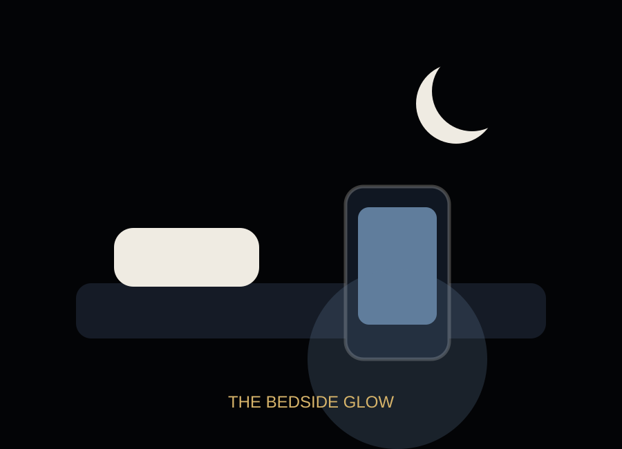

Attention becomes fragmented.
Frequent checking breaks deep work into smaller pieces. Even short interruptions can make it harder to return to the original task with the same clarity.
The cost of phone dependency is not only time. It can also appear as fractured focus, lighter sleep, weaker presence, delayed work, constant comparison, and the feeling that silence needs to be filled.

Frequent checking breaks deep work into smaller pieces. Even short interruptions can make it harder to return to the original task with the same clarity.
Research reviews have connected problematic smartphone use with sleep quality concerns among adolescents and young people.
Phones can keep people connected across distance, but they can also divide attention in the same room.
The phone makes distraction portable. The harder the task feels, the more tempting the easier screen becomes.
A phone beside the bed turns rest into a negotiation: one more video, one more scroll, one more reply, one more check.
It helps people maintain friendships, capture memories, learn quickly, find directions, and stay safe. But the same device also competes with sleep, work, face-to-face conversation, and quiet mental space.
The goal is not to reject technology. The goal is to recover choice.
Sleep, focus, school, relationships, time, confidence, or calm?
Final Exhibit: Attention Reset